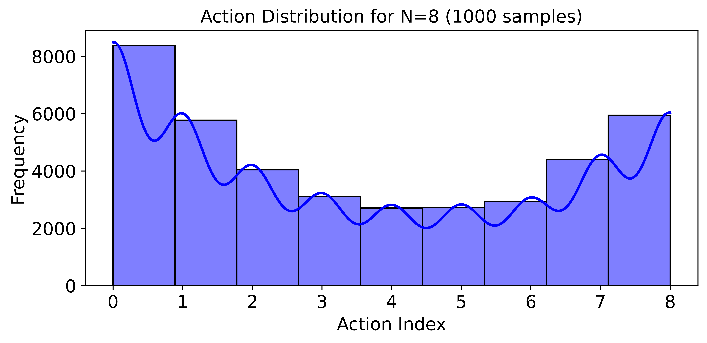
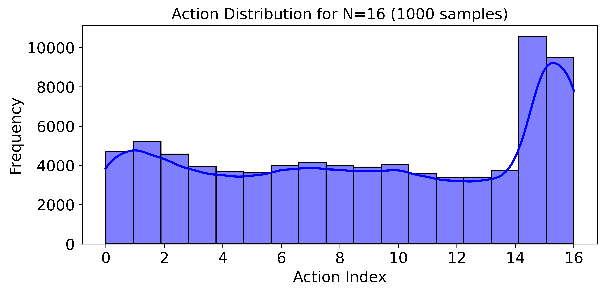
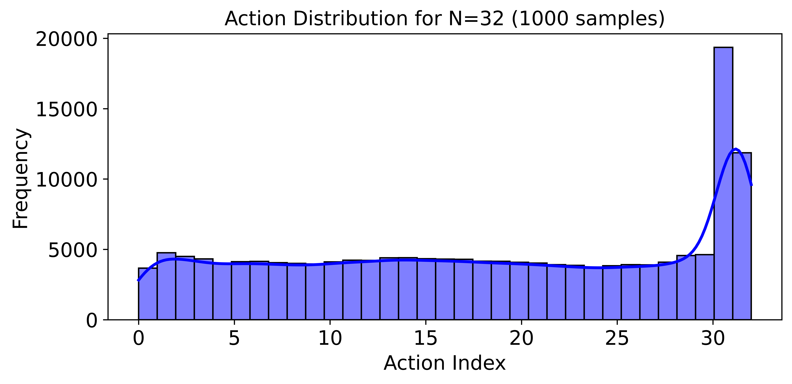
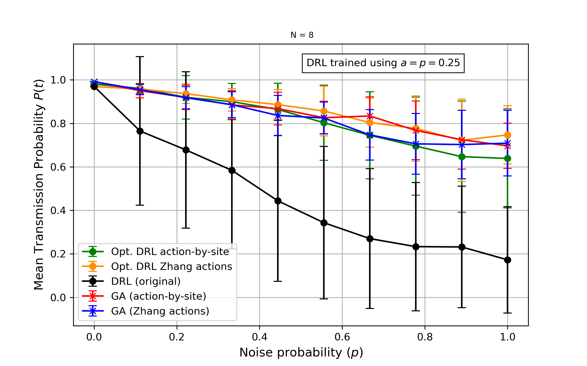
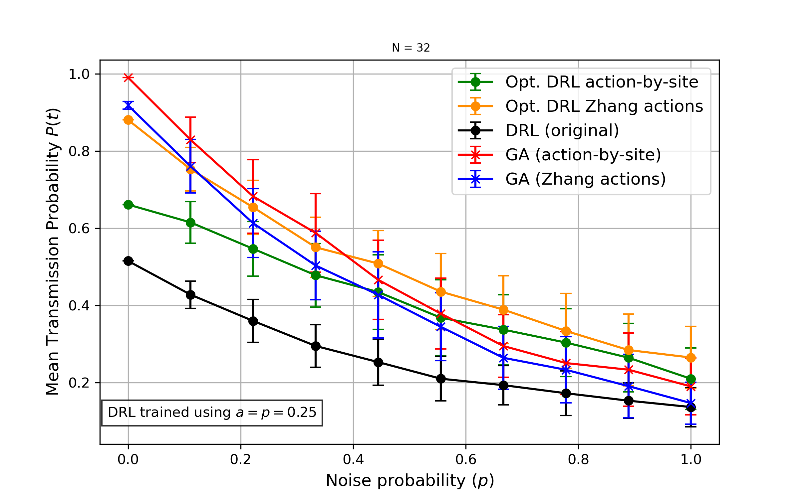

¿Qué estrategia de optimización conviene más para controlar un sistema cuántico mediante pulsos magnéticos: Deep Reinforcement Learning o algoritmos genéticos? Este trabajo, ya publicado, compara ambos enfoques para la transmisión de estados cuánticos en cadenas de qubits, midiendo fidelidad, costo computacional y robustez al ruido. El resultado es matizado: en el régimen sin ruido el algoritmo genético (GA) gana con claridad, alcanzando fidelidades más altas y corriendo entre 2 y 3 órdenes de magnitud más rápido. Frente a ruido dinámico intenso, en cambio, un DQN entrenado con domain randomization y recompensa densa eventualmente supera al GA. Ningún método domina categóricamente: cada uno tiene un régimen donde es la mejor opción.
En términos simples, la transferencia de estado cuántico (QST) consiste en mover información cuántica de un extremo a otro de una cadena de qubits sin perderla en el camino, algo necesario para conectar distintas partes de un futuro procesador cuántico. Por eso la QST a través de cadenas de espín homogéneas desempeña un papel crucial en la construcción de hardware cuántico escalable. Un protocolo básico de transmisión de estados cuánticos prepara un estado en un qubit y lo transfiere a otro a través de un canal, buscando minimizar el tiempo y evitar pérdida de información. La fidelidad del proceso —qué tan parecido es el estado recibido al que se quería enviar— se mide mediante funciones proporcionales a la probabilidad de transición entre ambos estados.
Tomando como punto de partida el trabajo de Zhang et al. [1], que propone el uso de deep reinforcement learning para controlar la transferencia de estados cuánticos, abordamos este problema de optimización mediante pulsos magnéticos constantes y dos estrategias complementarias: aprendizaje por refuerzo profundo (DRL), donde un agente aprende secuencias de pulsos mediante recompensas, y algoritmos genéticos (GA), que desarrollan soluciones candidatas mediante selección y mutación. Analizamos la eficiencia de ambos métodos, su capacidad para incorporar restricciones físicas y, sobre todo, cómo se comportan cuando el control deja de ser perfecto.
Control Dinámico
En términos concretos, controlar el sistema significa aplicar sobre la cadena una secuencia de pulsos magnéticos, uno después del otro, eligiendo su forma para guiar el estado cuántico de un extremo al otro. El sistema consiste en una cadena de N qubits con Hamiltoniano de intercambio XX que evoluciona bajo Hamiltonianos independientes del tiempo por intervalos. El control se implementa mediante pulsos de campo magnético aplicados en subintervalos de tiempo discretos:
- En cada subintervalo se aplica una configuración Bk,j de campos elegida de un conjunto de configuraciones posibles
- Se busca encontrar una secuencia óptima de 5N compuertas de un qubit que transmitan el estado desde el primer al último qubit
- Las configuraciones posibles de campos definen el espacio de acciones
En este trabajo exploramos dos espacios de acciones diferentes:
- Espacio de acciones original de Zhang et al.: Un conjunto de 16 acciones que aplican campos magnéticos predefinidos sobre sitios específicos de la cadena, tal como fue propuesto en el trabajo original.
- Una acción por sitio: Un espacio de acciones simplificado donde cada acción consiste en encender un campo magnético sobre un único sitio de la cadena (N acciones posibles), permitiendo mayor granularidad en el control.
Estrategias de Control
Algoritmos Genéticos (GA)
El algoritmo genético se implementó usando PyGAD con evaluación paralela de poblaciones mediante PyTorch:
- La población inicial consiste en secuencias aleatorias de 5N acciones
- Se simula la aplicación de cada secuencia y se les asigna una fitness proporcional a la calidad de transmisión, evaluada sobre toda la evolución temporal
- Se seleccionan las secuencias de mayor fidelidad como padres (selección steady-state) y se genera una nueva población mediante cruzamiento uniforme y mutación por intercambio (swap)
- La estructura y simpleza del algoritmo genético permiten que sea fácil de paralelizar en GPU
| Hiperparámetro del GA | Valor |
|---|---|
| Máximo de generaciones | 1000 |
| Tamaño de la población | 4096 |
| Saturación (generaciones sin mejora) | 30 |
| Tipo de mutación | swap |
| Probabilidad de mutación | 0.99 |
| Genes mutados | N |
| Tipo de selección de padres | 'sss' (steady-state) |
| Padres apareados / elitismo | 409 / 409 |
| Tipo y probabilidad de cruzamiento | uniforme, 0.8 |
Tabla I. Hiperparámetros del algoritmo genético utilizados para obtener los resultados presentados en el paper.
Un barrido sistemático de los parámetros físicos del control —el campo magnético h y el paso temporal Δt— sobre una cadena de N=64 qubits mostró que el GA encuentra secuencias con probabilidad de transmisión P(t)>0.99 en una región amplia de ese espacio de parámetros, sin necesidad de un ajuste fino (ver figura en la sección de Optimización de Hiperparámetros, más abajo).
Deep Reinforcement Learning (DRL)
El agente DRL se implementó como una Deep Q-Network (DQN) con replay de experiencia priorizado usando TensorFlow, adaptado de la implementación de Zhang et al.:
- El espacio de estados codifica la parte real e imaginaria de cada coeficiente del vector de estado de la cadena, s(t) = (Re{ψ₁},...,Re{ψN},Im{ψ₁},...,Im{ψN})
- Se entrena el agente con una política ε-greedy: explora acciones al azar con probabilidad ε y explota la mejor acción conocida el resto del tiempo, minimizando el error cuadrático entre la red Q y una red objetivo periódicamente actualizada
- La recompensa es una función escalonada de la probabilidad de transmisión: crece suavemente para P(t)≤0.8, se acelera hasta P(t)=1-χ, y salta a un valor muy alto (2500) apenas se supera ese umbral, empujando al agente a buscar transmisiones casi perfectas
- Inyección de ruido durante el entrenamiento episódico (domain randomization, es decir, variar aleatoriamente las condiciones de entrenamiento para que el agente generalice mejor) para mejorar la robustez frente a control imperfecto
- El desempeño de DRL depende fuertemente de la elección de hiperparámetros y condiciones de entrenamiento
| Hiperparámetro del DQN (línea base, Zhang et al.) | Valor |
|---|---|
| Tamaño de minibatch | 32 |
| Tasa de aprendizaje | 0.01 |
| Factor de descuento (γ) | 0.95 |
| Tamaño de la memoria de replay | 40000 |
| Neuronas (1ª / 2ª capa oculta) | 120 / 40 |
| Tasa ε-greedy | 1 → 0.01 (decay 0.0001) |
| Número de episodios | 50000 |
| Período de aprendizaje (t') | 5 timesteps |
| Período de reemplazo de la red objetivo (C) | 200 episodios |
Tabla III. Hiperparámetros de la implementación original del DQN, adaptada de Zhang et al. [1], usada como línea base de comparación.
Resultados sin Ruido: GA vs DRL
GA: acciones por sitio vs acciones de Zhang

(a) Probabilidad de transmisión máxima obtenida por el GA en función de la longitud de la cadena, usando el conjunto de acciones por sitio (rojo) y el conjunto propuesto por Zhang et al. (azul). Los cuadrados son el mejor valor sobre 30 poblaciones iniciales, los círculos el promedio de esos máximos. (b) Evolución temporal de P(t) para N=32 con ambos conjuntos de acciones, comparada con la evolución natural sin control (verde).
DQN original: fidelidad vs longitud de cadena

(a) Probabilidad de transmisión máxima obtenida por el DQN (hiperparámetros originales de Zhang et al.) en función de la longitud de cadena, sobre 30 realizaciones de los pesos iniciales de la red. (b) Evolución temporal de P(t) para N=32 en cada realización (negro), comparada con la evolución natural (verde).
- Con el conjunto de acciones por sitio, el GA mantiene P(t)≳0.99 para todas las longitudes de cadena estudiadas; con el conjunto de Zhang et al., su desempeño decae con N
- El DQN original iguala al GA solo para cadenas muy cortas (N≈8-12); a partir de ahí la brecha se agranda claramente a medida que crece la longitud de la cadena
- Ambos métodos encuentran secuencias que llevan la transmisión a su máximo en tiempos cercanos al límite cuántico de velocidad (QSL) —el tiempo mínimo teórico que la dinámica permite para completar la transferencia—, pero solo el GA lo hace de forma consistente en calidad
Comparación de Desempeño y Costo Computacional
Ambos métodos se evaluaron en términos de fidelidad máxima, desempeño promedio y costo computacional.
Fidelidad: GA vs DRL

Comparación directa entre el GA con acciones por sitio (rojo) y el DQN original (negro): probabilidad de transmisión máxima vs longitud de cadena (a) y evolución temporal de P(t) para N=32 (b).
Tiempos de CPU

Tiempos de ejecución requeridos por GA (rojo) y DQN (negro) para alcanzar sus criterios de convergencia, en escala logarítmica.
Observaciones clave:
- El algoritmo genético permite obtener secuencias que alcanzan fidelidades más altas que el DQN original, salvo para cadenas muy cortas donde ambos son comparables
- Para cadenas de más qubits es conveniente cambiar el conjunto de acciones y usar el esquema por sitio
- El algoritmo DQN emplea tiempos de ejecución entre 2 y 3 órdenes de magnitud mayores que los requeridos por el GA; esa diferencia de costo es la que permitió automatizar la búsqueda de hiperparámetros y probar múltiples funciones de fitness y conjuntos de acciones para el GA, algo inviable de replicar de la misma forma con el DQN
Optimización de Hiperparámetros con Optuna
Dado que el desempeño del DQN depende críticamente de la elección de sus hiperparámetros, se realizó una búsqueda sistemática con Optuna sobre el factor de descuento de la recompensa γ ∈ [0.95, 1], la tasa de aprendizaje α ∈ [10⁻⁵, 10⁻²] y el número de neuronas de la primera capa oculta ∈ [512, 4096] (la segunda capa usa un tercio de ese valor). Para cada longitud de cadena y conjunto de acciones se corrieron 32 trials de 20000 episodios de entrenamiento, seguidos de 100 episodios de validación, bajo una probabilidad y amplitud de ruido dinámico del 25%. En contraste, el comportamiento del GA está gobernado por un conjunto mucho más chico de parámetros intuitivos (tamaño de población, tasa de mutación, criterio de saturación), lo que simplifica notablemente su ajuste.
| Longitud de cadena | Conjunto de acciones | γ | α | Neuronas (1ª capa) |
|---|---|---|---|---|
| 8 | por sitio | 0.971 | 0.008 | 2417 |
| 8 | Zhang | 0.964 | 0.001 | 3910 |
| 16 | por sitio | 0.972 | 0.0008 | 4062 |
| 16 | Zhang | 0.966 | 0.0006 | 1494 |
| 24 | por sitio | 0.998 | 0.003 | 3219 |
| 24 | Zhang | 0.999 | 0.0001 | 1400 |
| 32 | por sitio | 0.990 | 0.001 | 1502 |
| 32 | Zhang | 0.997 | 0.0003 | 3511 |
| Original (todas) | Zhang | 0.95 | 0.01 | 120 |
Tabla II. Hiperparámetros óptimos encontrados con Optuna para cada longitud de cadena y conjunto de acciones (25% de probabilidad y amplitud de ruido durante el entrenamiento), comparados con los usados por Zhang et al. (última fila, resaltada).

(a) Recompensa en función de los episodios de entrenamiento del DQN para distintas combinaciones de hiperparámetros optimizadas con Optuna (con 10% de ruido de amplitud y probabilidad). (b) Dependencia de la probabilidad de transmisión máxima del GA respecto de los parámetros físicos del control —campo magnético h y paso temporal Δt— para una cadena de N=64 qubits: el GA encuentra secuencias de alta fidelidad en una región amplia del espacio (h, Δt).
Distribución de Acciones en las Secuencias del GA
Para entender qué hace el GA en la práctica, se analizó, sobre 1000 secuencias exitosas (P(t)≳0.99) con el esquema por sitio, qué tan seguido se actúa sobre cada sitio de la cadena, para distintas longitudes:
N=8

Frecuencia de uso de cada sitio (0 = sin acción).
N=16

Frecuencia de uso de cada sitio (0 = sin acción).
N=32

Frecuencia de uso de cada sitio (0 = sin acción).
- La acción "cero" (no actuar) se vuelve menos relevante a medida que crece la longitud de la cadena: para lograr una transferencia exitosa hace falta accionar compuertas de fase no triviales la mayor parte del tiempo
- Los sitios centrales de la cadena se usan más que el resto, excepto por los extremos; el sitio penúltimo destaca con una frecuencia notablemente mayor a la de los demás, consistente con el "congelamiento" de la excitación en el último sitio que se observa en las curvas P(t)
GA para Cadenas Largas

Probabilidad de transmisión vs longitud de cadena, hasta N=128. Los cuadrados son el mejor valor sobre M poblaciones iniciales (alcanza el objetivo de 0.99 hasta N≤60); los círculos son el promedio de los máximos, que decae más rápido. Aun así, el GA mantiene probabilidades máximas mayores a 0.97 en cadenas de 128 qubits.
La dificultad de la tarea crece con la longitud de la cadena: manteniendo fijo el tamaño de la población inicial, el criterio de saturación termina deteniendo el algoritmo antes de alcanzar el objetivo para N>60. Mejorar estos resultados para cadenas muy largas requeriría, sencillamente, más individuos y más poblaciones iniciales.
Robustez frente al Ruido Dinámico
Los protocolos de control se evaluaron bajo dos modelos de ruido dinámico tipo dephasing (un tipo de ruido que aleatoriza la fase cuántica del estado sin intercambiar energía con el entorno). En el esquema de ruido de toda la cadena (WCN), en cada paso temporal, con probabilidad p, todos los coeficientes del vector de estado se multiplican simultáneamente por fases aleatorias eiδξk, con ξk uniformemente distribuido en [-1, 1]. En el esquema alternativo de ruido sitio a sitio (SSN), cada sitio se perturba de forma independiente, calibrando la probabilidad por sitio de modo que el número esperado de eventos de ruido por paso temporal coincida con el del esquema WCN. Los resultados de ambos esquemas se comparan más abajo, en Ruido Global vs. Ruido Sitio a Sitio.
Para validar la robustez, se entrenó al DQN directamente bajo ese ruido (domain randomization, p=δ=0.25), con hiperparámetros optimizados vía Optuna para esa misma condición (Tabla II). Cada modelo entrenado se validó sobre 100 corridas independientes, comparándolo contra el DQN original (sin entrenamiento ni ajuste para ruido) y contra las secuencias fijas obtenidas por el GA sin ruido, expuestas al mismo modelo de ruido durante la validación.
N=8: Amplitud fija

Probabilidad de transmisión vs probabilidad de ruido (amplitud fija δ=0.25).
N=8: Probabilidad fija

Probabilidad de transmisión vs amplitud de ruido (probabilidad fija p=0.25).
N=16: Amplitud fija

Probabilidad de transmisión vs probabilidad de ruido (amplitud fija δ=0.25).
N=16: Probabilidad fija

Probabilidad de transmisión vs amplitud de ruido (probabilidad fija p=0.25).
N=24: Amplitud fija

Probabilidad de transmisión vs probabilidad de ruido (amplitud fija δ=0.25).
N=24: Probabilidad fija

Probabilidad de transmisión vs amplitud de ruido (probabilidad fija p=0.25).
N=32: Amplitud fija

Probabilidad de transmisión vs probabilidad de ruido (amplitud fija δ=0.25).
N=32: Probabilidad fija

Probabilidad de transmisión vs amplitud de ruido (probabilidad fija p=0.25).
Resultados principales:
- El DQN sin entrenamiento ni optimización para ruido (curva negra) colapsa rápidamente: solo es competitivo en el límite de ruido nulo y para cadenas muy cortas
- Para cadenas más largas, las secuencias generadas por el GA exhiben mayor resiliencia frente a ruido dinámico de amplitud y probabilidad bajas
- Cuando el DQN se entrena explícitamente con ruido y sus hiperparámetros se optimizan bajo esa misma condición, su probabilidad de transmisión promedio eventualmente supera a la del GA a medida que aumenta la intensidad del ruido —el efecto es más marcado en cadenas cortas y en el límite de ruido fuerte
- No existe un único conjunto de acciones óptimo para el DQN frente a ruido: mientras que para el GA el esquema por sitio es siempre superior, para el DQN la elección óptima depende de la longitud de la cadena y de la probabilidad/amplitud del ruido
Recompensa Densa vs. Recompensa Dispersa
La recompensa original de Zhang et al., usada como línea base, es dispersa: depende solo de la probabilidad de transmisión y da una señal muy débil mientras esta permanece cerca de cero, que es la mayor parte de la evolución. Para mejorar la señal de aprendizaje se introdujo una recompensa densa, R = (1+F)⟨χ⟩, que combina la fidelidad de transmisión F con la posición media de la excitación a lo largo de la cadena, ⟨χ⟩ = Σⱼ j|ψⱼ|² —una señal continua que crece a medida que la excitación avanza, incluso mucho antes de llegar al final.
- La recompensa densa produce una mejora sistemática sobre la dispersa: el agente recibe una señal más informativa y frecuente a lo largo de toda la evolución, no solo cerca del final
- Aun así, la probabilidad de transmisión lograda con recompensa densa sigue por debajo de la del GA y sigue decayendo con la longitud de cadena, aunque de forma más suave
- El hallazgo más importante de esta comparación es que el diseño de la recompensa importa menos que la estructura del entorno de entrenamiento: las mejoras más grandes no vienen de cambiar la recompensa, sino de entrenar en presencia de ruido y desorden (ver secciones siguientes)
Ruido Global vs. Ruido Sitio a Sitio (WCN vs. SSN)
Para chequear que las conclusiones no dependieran de la estructura espacial particular del ruido, se repitió el estudio de robustez completo bajo el esquema SSN (descripto arriba), calibrado para inyectar en promedio la misma cantidad de perturbación que el esquema WCN. Los modelos de DQN se entrenaron únicamente bajo WCN (p=δ=0.25) y se evaluaron después bajo ambos esquemas.
- WCN y SSN no muestran diferencias significativas en ningún régimen de parámetros explorado, consistente con que ambos esquemas afectan, en promedio, la misma cantidad de sitios a lo largo de todo el episodio
- Los modelos de DQN entrenados exclusivamente bajo WCN generalizan bien a SSN sin haberlo visto nunca durante el entrenamiento, lo que sugiere que las políticas aprendidas no están sobreajustadas a la estructura espacial particular del ruido de entrenamiento
- El orden de desempeño relativo entre métodos se mantiene igual bajo ambos esquemas: el GA por sitio sigue siendo el mejor en el régimen de ruido bajo, y las estrategias de DQN siguen ganando robustez relativa a medida que aumenta la intensidad del ruido
Entrenamiento con Desorden Estático
Además del ruido dinámico, se estudió el efecto del desorden estático en los acoples de la cadena, Ji → Ji(1+δi), con δi muestreado uniformemente en [-ε, ε] y fijo durante toda la evolución (a diferencia del ruido dinámico, que cambia en cada paso temporal). Se entrenaron dos variantes de DQN con recompensa densa: una solo con ruido dinámico (p=δ=0.25), y otra combinando ruido dinámico y desorden estático durante el entrenamiento (p=δ=0.1, desorden=0.1).
- Para desorden y ruido bajos, el GA sigue ganando (evaluado sobre secuencias optimizadas sin desorden)
- Entre las variantes de DQN, el modelo entrenado combinando ruido dinámico y desorden estático supera consistentemente al entrenado solo con ruido dinámico, tanto frente a desorden puro como frente a ruido sitio a sitio
- Combinar distintos tipos de evolución dinámica durante el entrenamiento —ruido y desorden— resulta una estrategia sensata para mejorar la exploración del DQN: lo obliga a considerar un rango más amplio de estados posibles
Desorden Estático en las Secuencias del GA
Para el GA se distinguen dos situaciones: secuencias "probadas con desorden" (optimizadas en condiciones ideales y luego evaluadas sobre Hamiltonianos desordenados) y secuencias "optimizadas con desorden" (donde cada corrida del GA usa Hamiltonianos con una realización de desorden distinta, muestreada en cada generación).
- Optimizar directamente contra el desorden recupera la mayor parte de la fidelidad perdida, siempre que las inhomogeneidades sean conocidas de antemano y se puedan incorporar al proceso de optimización
- No hay una ventaja sistemática de un conjunto de acciones sobre el otro frente al desorden: la comparación depende de la intensidad del desorden y del tamaño del sistema. De hecho, a intensidades de desorden más altas el conjunto de acciones de Zhang et al. —peor en el caso ideal— se vuelve más robusto que el esquema por sitio, que se degrada con fuerza
- Los niveles de desorden explorados (hasta 0.5) son mucho mayores a los esperables en dispositivos cuánticos reales; se usaron deliberadamente para poner a prueba el comportamiento del modelo en regímenes extremos
Conclusiones
- Es sorprendente lo bien que el GA entrega secuencias de control capaces de llevar la transmisión a valores muy altos sobre un rango amplio de longitudes de cadena. Aunque cadenas de cientos de qubits todavía son poco realistas, los resultados muestran que sistemas cuánticos con dimensión de Hilbert de uno o dos cientos son controlables mediante secuencias generadas por GA, y que esas secuencias son robustas frente a ruido dinámico débil.
- A pesar de explorar varias funciones de recompensa y conjuntos de acciones, el DQN no alcanza la calidad de transmisión del GA, ni siquiera en cadenas cortas, y la diferencia empeora con la longitud. Una posible explicación es que la fitness del GA evalúa el efecto de la secuencia a lo largo de toda la evolución temporal, mientras que el DQN recompensa acciones locales —una estrategia que funciona en muchos otros problemas de DRL, pero que aquí no alcanza para igualar al GA. No se encontró un patrón reconocible en las acciones usadas por ambos métodos que sugiera una forma práctica de sesgar la búsqueda hacia mejores políticas.
- Frente al ruido, el panorama es más matizado: el desempeño de las secuencias del DQN termina siendo mejor que el del GA para ruido suficientemente fuerte, y entrenar el DQN en un entorno débilmente ruidoso no degrada significativamente su desempeño respecto del caso sin ruido. La conclusión es tan simple como exigente: controlar sistemas cuánticos ruidosos requiere un método que, en el límite de ruido cero, iguale el desempeño del GA, y que pueda entrenarse bajo condiciones ruidosas sin degradación sustancial.
- Mientras que para el GA el esquema de acciones por sitio es claramente mejor, lo mismo no es necesariamente cierto para el DQN frente a evolución dinámica ruidosa: no hay un único conjunto de acciones universalmente óptimo, sino que la elección depende de la longitud de la cadena y de la probabilidad y amplitud del ruido.
- El trabajo deja dos líneas abiertas: introducir criterios de fitness "suavizados" que limiten la variabilidad de las secuencias tipo escalón (todavía sin una propuesta convincente), y mejorar el DQN mediante una exploración más efectiva del espacio de acciones junto con una política multi-paso cuya recompensa contemple que la probabilidad de transmisión permanece despreciable durante la mayor parte de la evolución, en línea con el límite cuántico de velocidad.
Charla
Charla sobre este trabajo, "Aprendizaje automático aplicado a la transmisión de estados cuánticos":
Tecnologías
Estado del Trabajo
Este trabajo fue desarrollado como parte de mi investigación doctoral en el Instituto de Física Enrique Gaviola (CONICET-UNC) y la FaMAF-UNC. El artículo fue publicado el 26 de junio de 2026 en Physica Scripta (vol. 101, 265101) y representa una contribución original al campo del control cuántico mediante técnicas de optimización computacional. Parte de este trabajo también fue presentada en un congreso internacional (ver Referencias).
Referencias
[1] X.-M. Zhang et al., Physical Review A 97, 052333 (2018). DOI: 10.1103/PhysRevA.97.052333
[2] S. Perón Santana, A. Fiuri, M. Domínguez y O. Osenda, "The pros and cons of using deep reinforcement learning or genetic algorithms to design control schemes for quantum state transfer on qubit chains", Physica Scripta 101, 265101 (2026). DOI: 10.1088/1402-4896/ae7cc1
[3] A. Fiuri, M. Domínguez, S. Perón Santana y O. Osenda, "Solving the Qubit Transmission Problem with Biologically Inspired Neural Networks and Reinforcement Learning", en Information Management and Big Data (SIMBig 2025), Communications in Computer and Information Science, vol. 2895, pp. 60–78, Springer, Cham (2026). DOI: 10.1007/978-3-032-20322-9_5